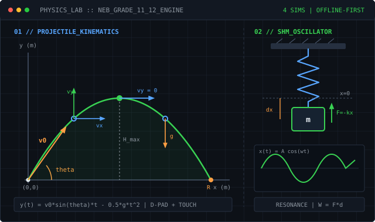

01 // FLAGSHIP
ACTIVE DEVELOPMENT
Physics Lab
An offline-first interactive physics simulation laboratory designed for Nepal's Grade 11 and Grade 12 Physics curriculum. Supports Android TV, desktop browsers and touch devices.
- Four implemented curriculum-aligned simulations: Projectile Motion and Newton's Second Law, Simple Harmonic Motion and Mechanical Resonance, and Work, Energy and Power
- Interactive physical models with real-time measurements and analytical graphs
- D-pad navigation and touch-friendly interaction engineered for large screens, desktop browsers, and touch devices
